Reading Club 目录 · 论文精读 · 2026-10-10
扩展 Nemov 算法：
从规则磁面到磁岛与 SOL 的磁坐标
核心结论：作者把磁面梯度和角度梯度组合的计算改写为沿磁力线的初值积分，在 W7-X 的规则核心区、磁岛内部和岛链外的层流 SOL构造分区域的磁坐标与度量。核心区与一组 VMEC 结果相符；岛链附近能表达低阶谱难以解析的几何细节。遍历区域不在适用范围内，跨分离面的连续标签也不等于一个处处非奇异的全局坐标系。
覆盖：NF_45_22.pdf 全部 8 页（印刷页 22–29）、图 1–11、式 (1)–(11) 和结论；逐页视觉核对。无表格、无附录。正文未提供补充材料、代码或数据链接；来源检索未确认独立补充文件。本报告没有重新运行 aam10 或 VMEC。所有“读者核查”“建议实验”均与作者结果分开。
1. 要解决的不是平衡，而是给定磁场的几何表示
磁坐标让“沿磁场方向”和“穿过磁面方向”分开，方便输运、稳定性和有限体积计算。传统的规则嵌套磁面表示非常适合核心区；当边缘出现岛链、分离面与外侧规则区域时，单一磁轴出发的径向编号难以覆盖不同拓扑域。本文的输入是已知总磁场，输出是位置与磁坐标之间的映射及度量，不是从压力和电流重新求解 MHD 平衡。（原文 §1–2，PDF 1–2 / 印刷 22–23）
作者以 Nemov 1988 年求磁面函数梯度的算法为基础，增加角度 Clebsch 分量的输运，把两个磁微分方程变成场线初值问题。另一条工程贡献是尽量避免对已经计算出的几何量再作空间差分：优先使用原始磁场的一阶导数、磁通拟合的解析导数与局部样条映射。这里的“仅需场线追踪”仍包括磁场插值、磁通积分、磁拓扑识别、拟合和磁场导数，并不意味着完全没有导数或其他几何处理。（摘要、§2.1–2.2，PDF 1–4）
作者把结果称为 BoRiS 坐标，服务于三维有限体积流体代码 BoRiS；在规则区域相当于归一化的 Boozer 类坐标。实现名为 aam10。论文贡献的直接证据是 W7-X 的核心区基准和全规则区域的网格、度量展示；结尾提到 NCSX 应用，但没有展示相应算例或误差。（§3–5，PDF 4–7）
| 范围 | 论文处理方式 | 解读边界 |
|---|---|---|
| 核心区规则嵌套磁面 | 从核心磁轴出发，归一化环向磁通；与 VMEC 比较。 | 已展示几何一致性；不是完整度量张量的逐项误差验证。 |
| 五个边缘磁岛 | 每个岛有局部磁轴和独立坐标域。 | 磁岛不是同一核心径向坐标的简单延长。 |
| 岛链外层流 SOL | 保留仍可辨认的规则磁面，用延伸径向标签。 | 没有证明适用于任意开放、混沌或撞壁场线。 |
| 分离面、X 点、O 点 | 区域连接在分离面标签处；网格采用单元中心，避开奇异点本身。 | 连续标签不能消除坐标退化。 |
| 强遍历区、轴对称情形 | 遍历区排除；作者明确说当前方程组不能直接用于轴对称情形。 | 不能由论文标题推断为通用任意磁场坐标算法。 |
2. 先分清三套角度与多区域径向标签
圆柱物理坐标为 ；Boozer 类坐标为 ；归一化 BoRiS 坐标为 。物理环向角 和磁环向坐标 不是同一个量；图中固定的 是物理截面。、 把角度周期变为单位周期。（§2.1，PDF 2–3）
| 符号 | 意义与注意点 |
|---|---|
| 环向、极向磁通；原文把 写成总环向磁通。不同拓扑域的积分面与参考边界不同。 | |
| 原文用于给某一磁面标号； 是该面磁通。不要把大写标签与小写 Clebsch 坐标混淆。 | |
| 旋转变换，由场线极向和环向累计角度之比估计；岛内角度绕行中心的约定必须另行确认。 | |
| 原文分别称极向与环向电流，通过 Stokes 定理求取； 不是 Jacobian，后者用 表示。 | |
| 沿场线累积的 ，单位为 。 | |
| 前者为逆变径向度量，后者为协变混合度量；上下指标代表不同几何对象。 | |
| 磁场径向协变分量与论文采用的局部剪切量； 不是等离子体压力与磁压之比。 |
对每个岛，局部磁通除以该岛分离面磁通后映射为单位立方体；核心与外侧层流 SOL 共同使用一个延伸盒子。W7-X 有五重对称性，论文取 、，因此共有 个坐标域。核心和 SOL 的盒子为 ；岛域为 。两个角度方向有周期识别，图中的盒子是参数域，不是六块彼此独立的物理立方体。（§2.1，PDF 2）
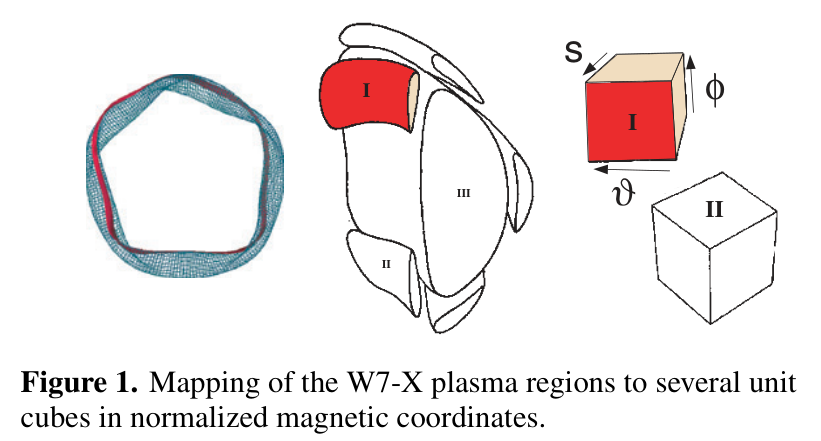
NF_45_22.pdf · PDF 2 / 印刷 23 · 原文图 1 · 原图渲染裁剪，无重绘。
读图：左侧为 W7-X 的几何示意，中间把核心与岛区分开，右侧是带 方向的参数盒。图中不同岛用 I、II 示意，核心标为 III；它不是完整画出六个盒子的枚举表。无数值坐标或误差条。
观察与结论：一个核心轴和多个岛轴需要多个坐标域。每个岛可以用自己的归一化磁通覆盖，核心与外侧规则 SOL 用延伸域连接。这支持“分块覆盖”的思路，不证明所有域之间坐标导数连续、接口守恒或 X 点非奇异。与式 (1) 的关系是标签值可在边界相接，但相同 可出现在多个域。
径向定义为原式 (1)：
岛内的 从岛磁轴起算，核心区从核心磁轴起算。外侧 SOL 使用其内边界作参考，得到 。沿 axes-line 从核心向外走， 先从零增到一，进入岛后从一减到零，再从岛轴增到一，之后进入 SOL 的大于一区域。这使边界上的径向标签能相接，但标签在空间中不单调，也不能单独确定位置；必须同时保留区域编号。标签连续不保证导数连续。（§2.1，PDF 3；最后一句为读者解释）
规则磁面要求 。角度组合满足 ，于是场线在磁角度平面里具有恒定斜率。岛内存在自己的磁面中心；X 点连接不同拓扑域，局部坐标会退化。遍历区域没有本方法所需的光滑磁面族，不能靠增加采样数量恢复一个不存在的磁面标签。（§1–2，PDF 1–3）
3. 输入、拓扑识别与初值：ODE 之前要完成的工作
3.1 选参考平面和 axes-line
输入磁场位于圆柱网格盒 。先比较场线绕一整圈前后的 Poincaré 交点，最小化两交点距离寻找周期轨道，再人工识别 O 点、X 点和岛结构。作者指出可以用 Cary–Hanson residue 方法自动分类，但本文没有实现。强遍历分离面可能无法按此方式定位 X 点；对所考察 W7-X 情形，作者认为场线的 Kolmogorov 长度远长于一圈，因而没有成为障碍。该长度没有定量列出。（§2.1，PDF 2）
在豆形对称面选择 ，沿核心磁轴到外侧岛 O 点的径向线作 axes-line；也可在三角形对称面 ，从内侧岛轴连到核心轴。这里的对称性是后续零分量初值的依据，不能把这些初值原样套到没有相应对称面的磁场上。（§2.1–2.2，PDF 2、4）
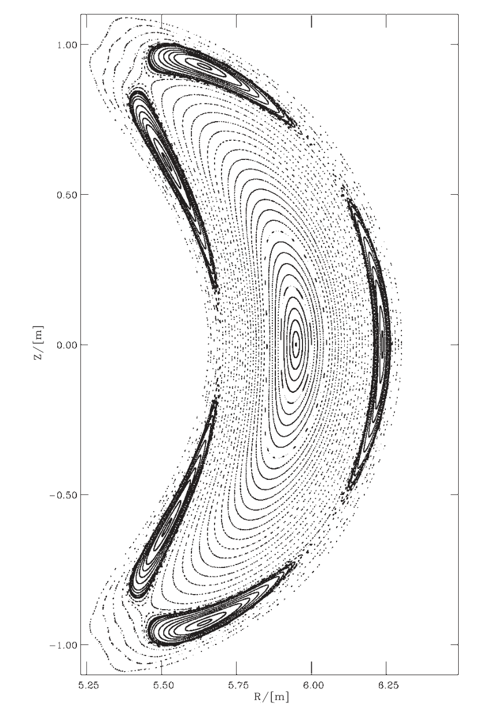
NF_45_22.pdf · PDF 2 / 印刷 23 · 原文图 2 · 原图渲染裁剪，无重绘。
读图：物理截面为 ，横轴大半径 、纵轴高度 ，单位均为米。每条轨道在参考平面的交点形成轮廓；中部嵌套磁面、五个大岛和更外侧点迹可区分。axes-line 沿 从核心磁轴向外侧岛轴延伸。
观察与结论：核心与岛内部具有不同中心，外侧仍有可用规则磁面，因而单一磁轴标签不足以组织整个截面。散开的点迹不能自动当作算法已经处理的磁面；作者会排除强遍历或离开数据盒的轨道。图没有给有限时间扩散率、连接长度或拓扑误分类概率。它对应 §4 的标准场，不应与带鞍线圈电流的图 3 基准混同。
3.2 追踪磁面，求磁通、电流与旋转变换
沿 axes-line 用径向间距 启动场线，追踪数百个环向周回；W7-X 两组算例均采用 400 圈。在参考平面累积交点，重排得到闭合轮廓 。磁通来自轮廓围成的截面面积积分：
是展开而非取模后的累计极向和环向角，积分面是参考截面。电流 由相应闭合路径的磁场线积分按 Stokes 定理求得，论文没有给出全部离散路径规则。其他岛的起点通过物理环向角平移 的整数倍生成。（§2.1，PDF 3）
低阶有理面只产生有限组交点，不能像稠密的非有理轨道那样重建整个面，因此作者轻微移动径向起点并丢弃该有理面；磁轴仍单独保留。离开磁场数据盒或呈强遍历行为的场线被丢弃。对弱遍历的交点轮廓，作者允许用样条平滑；这给出数值近似轮廓，不能据此证明这些点所在区域严格可积。这里存在一个需要复现时明确的选择阈值：原文没有量化“弱”“强”的判据。（§2.1，PDF 3）
3.3 把磁通积分转成稳定的初始梯度与角度
在 axes-line 两侧分别拟合 的高阶多项式，再解析求导，取得 。两侧指大半径增加、减少方向；图 4 用有符号小半径展示。作者希望这种平滑抑制有理面附近微小岛链的影响，具体多项式阶数、约束和误差未报告。得到 与 的单值分支关系后，再用三次样条插值。（§2.1、3.2，PDF 3、5）
沿一条场线，原式 (3a–b) 从累积积分建立磁角：
核心与 axes-line 上的岛取 ；其他岛的 ， 是 的整数倍。 为真空磁导率，分母在积分所在磁面上为常量。取模前先积累角度可避免跨周期差分跳变；原文用局部三次样条建立空间坐标与磁坐标的等价映射。闭合角度、岛内绕行数与总磁通的归一化需配套核查，不能从单个公式孤立决定。（§2.1，PDF 3）
4. 扩展 Nemov 方程：输运的是梯度协变量
4.1 两个 Clebsch 分量与圆柱坐标因子
原文在 §2.2 写出 ，并引入：
是对角度的偏导，不是物理正交基下的环向分量；后者要除以 。遗漏该因子会同时破坏 ODE 和度量的单位。下面保留原文方程体系；其磁通归一化和角度协变量含义的疑点在 第 7 节 单独核查。（PDF 3）
4.2 从场线守恒量的梯度到初值问题
以物理环向角为独立变量，场线几何满足 、。这里需 ，否则要换参数。对恒定于场线的标量求空间导数，会得到梯度受磁场一阶导数驱动的线性方程。论文式 (5) 与式 (6) 的矩阵相同；下式是报告的紧凑重排，分别代入 和 ：
例如第一行保留了圆柱角度因子在径向上的导数：
这一步避免先重建三维 、、 再对其作全空间差分。仍要预先建立磁场各分量的一阶偏导数组。作者使用磁场及导数的三次样条插值，描述为每点涉及局部 矩阵；沿线积分用二阶 Runge–Kutta。网格间距、时间步控制、磁场差分模板与停止公差没有列出。（§2.2，PDF 3）
齐次线性系统可随积分长度指数放大误差，岛附近更明显。作者为每面取 axes-line 内、外两个起点，并分别沿正、负环向方向积分，令每段有效追踪长度约缩为单段的四分之一。四条追踪在重叠区域的结果一致作为质量检查。它是误差交叉检查，不是四阶积分方法，也不能检测四条路径共同继承的错误磁场或归一化。原文没有报告四路差异的容差。（§2.2，PDF 3–4）
4.3 初值由对称性和磁通梯度决定
令 。原式 (7) 可写为：
原式 (7e)、(7f) 是除以磁通径向导数；普通文本提取会把斜线漏掉，已对照 PDF 4 核验。代回式 (4)，可在 的对称起点恢复原文的 Clebsch 叉积。这也显示初值不能直接在 的磁轴或奇异点计算；那些点需要极限、独立处理或从实际网格中避开。对于轴对称场，作者指出式 (5b)、(6b) 退化为 ，当前构造不可直接使用；这不是说轴对称磁坐标本身不存在。（PDF 4）
4.4 径向度量、协变量与混合分量
归一化后的径向磁通导数和极向磁通导数是：
这里撇号为对 的导数，不能与 axes-line 上对 的导数混用。梯度输运直接给出原式 (9)：
由于 无量纲，按定义 的单位是 。它描述相同物理位移下径向标签变化的强弱；它的增大、减小不是磁场增强、减弱，也不是扩散系数。分离面附近 X 点和磁轴 O 点的 可趋零，同时角度坐标仍会退化。（PDF 4、7）
设位置映射为 ，注意粗体 表示位置向量，与圆柱大半径 不同。映射的导数给出协变基矢。论文进一步用以下量补齐混合度量：
。原文称真空情况下 ，有压强时需计算该协变分量。原式 (11c) 的整体负号、分子内加号，以及 (11d) 分子内减号已视觉核验。虽然主要策略避免对派生量反复差分，式 (10)、(11a) 仍依赖位置映射的导数；应使用一致的样条与坐标约定。本文没有展示所有度量分量的独立验证。（§2.2，PDF 4）
4.5 原文的 Jacobian 公式：保留印刷版本，复现前先核对
原式 (2) 印为：
主要物理含义是 Jacobian 随磁面常量与 变化，且符号受坐标定向影响。不过，在正文给定的总磁通和角度定义下，这两式的变换因子与通常体积 Jacobian 的链式法则不一致，式 (2a) 量纲也有疑问。报告不把它们静默改成教材公式；第 7.2 节 给出可复现的核对办法。由此也不能直接拿印刷式 (2) 的数值当已验证的体积元。（PDF 3）
5. 核心区验证：与 VMEC 相符，具体相符到哪里？
5.1 基准如何构造
§3 的场由 W7-X 磁体系统产生：50 个模块线圈供相同电流，控制鞍线圈为 。鞍线圈放大边缘岛，也在最外闭合磁面外产生小遍历层，并引入可见的 小岛链。作者只对非遍历部分建立磁面。（PDF 4，图 3）
从这个给定磁场中沿线追踪靠近分离面的磁面，用它作零压强、固定边界 VMEC 输入，再把 VMEC 几何转换到磁坐标。VMEC 使用 500 个径向网格点、20 个极向和 15 个环向谐波。这是同一真空场几何的两条数值重建路径：aam10 用直接场线追踪和梯度输运，VMEC 用固定边界平衡谱表示。边界本身来自场线方法，所以两者不是完全独立的输入验证。（§3.1，PDF 4；最后一句为读者判断）
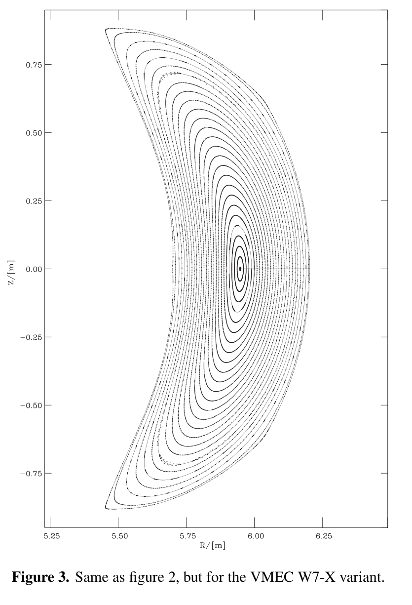
NF_45_22.pdf · PDF 4 / 印刷 25 · 原文图 3 · 原图渲染裁剪，无重绘。
读图：仍是 截面， 用米表示。来自 §3 的 50 个模块线圈加 鞍线圈变体。这里的“VMEC variant”指用于 VMEC 比较的场线场构型，不表示图上的每个点都是 VMEC 直接输出。
观察与结论：核心规则磁面清楚，局部可见鞍线圈引入的 小岛链。作者从靠近分离面的轨迹取固定边界给 VMEC，再比较双方在共有规则域内的几何。图支持基准输入的构造和次级岛的存在；它不能证明固定边界数据与磁场误差完全独立，也不能把空白处当作全域算法精度已验证。
5.2 初值磁通、逆变度量与坐标网格的三层对照
图 4 先比较初值层面的磁通导数：在核心区两侧分支，aam10 的磁通径向导数与 VMEC 总体相符，作者把良好一致的范围描述到约 。最外层差异增大，尤其内侧分支。作者归因于 VMEC 的有限 Fourier 分辨率难以解析 X 点；这与拓扑困难相符，但论文没有对 VMEC 分辨率、aam10 步长或多项式阶数作独立扫描，因而尚不能把所有差异唯一归因于 VMEC。（§3.2，PDF 5）
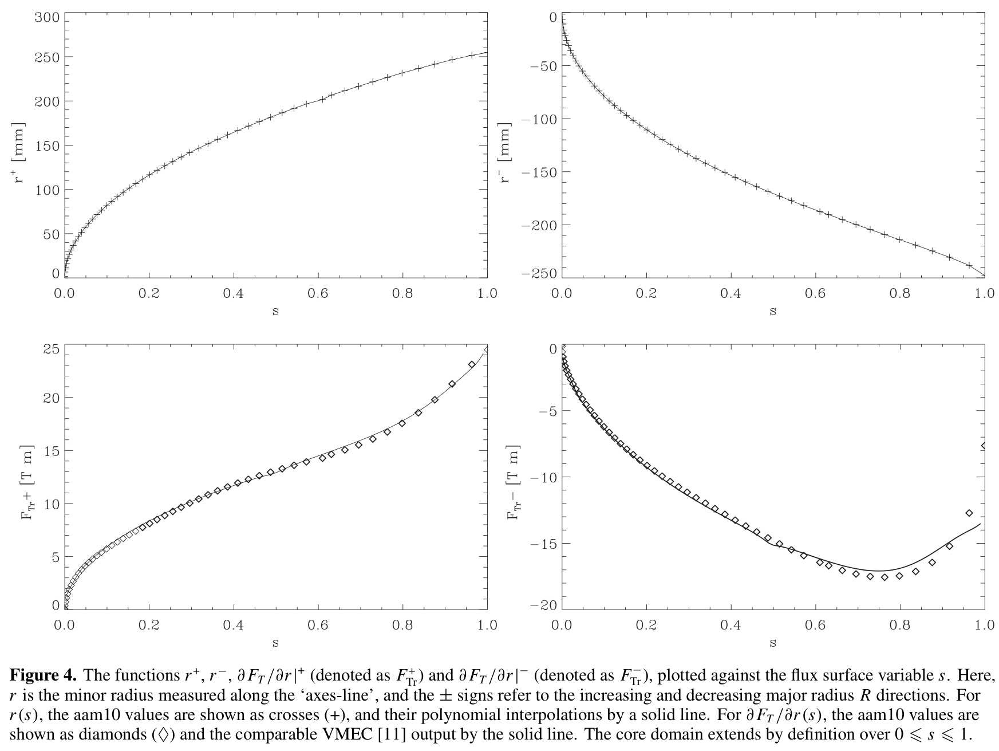
NF_45_22.pdf · PDF 5 / 印刷 26 · 原文图 4 · 原图渲染裁剪，无重绘。
读图：四面板横轴均为 ，从零到一。左上是向大半径增加方向的 ，右上是向大半径减少方向的有符号 ，纵轴为毫米；叉号是 aam10 值，实线是多项式插值。左下、右下分别是 、，单位为 ；菱形是 aam10，实线是 VMEC，对上排和下排不要使用同一图例解释。
逐面板观察：上排显示两分支从磁轴向外延展，符号不同源于方向约定。下排显示核心范围内导数对照吻合，外层出现偏差，右下内侧导数的转折与边界邻域差异更明显。上排拟合线贴近自身数据只证明插值一致，下排才是跨代码对照。
支持与限制：该图支持 ODE 初值磁通梯度的基本可靠性，作者把一致范围说到约 。它不提供误差范数、多项式阶数或独立分辨率扫描；不能从图上读出伪精确百分比，也不能把边缘偏差全部确定为 VMEC 错误。
图 5 检查 在不同磁面与角度上的分布。大部分核心磁面有良好吻合，外层呈明显岛链相关结构；aam10 的 曲线在 X 点处趋零，有限谱 VMEC 仅部分捕捉这一行为。图 6 检查位置映射：两种坐标网格大体重合，最外层和 X 点附近不同。由此有初值 → 梯度度量 → 空间网格三个层次的相互支持，强于只展示一张“看起来像”的截面。（§3.3，PDF 5–6）
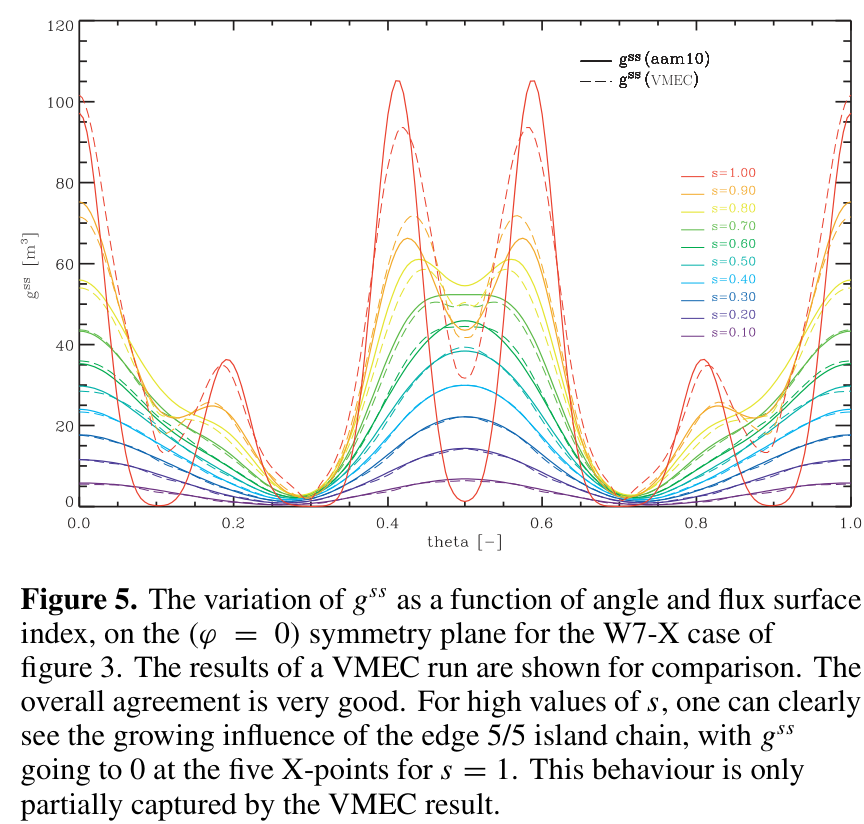
NF_45_22.pdf · PDF 6 / 印刷 27 · 原文图 5 · 原图渲染裁剪，无重绘。
读图：固定 ，多种颜色表示不同 ；实线为 aam10，虚线为 VMEC。横轴印为 theta，范围是零到一，按正文的归一化角度应与 对应，不应把它误读成零到一弧度。纵轴原标 ，与式 (9) 的 单位不符，保留原图并明确标记。
观察：内层曲线较平缓且双方接近；外层出现明显峰谷。在 边界，aam10 曲线于 X 点相关角度趋零，VMEC 对相应局部结构仅部分捕捉。周期截面的边界与内部低值不应按视觉低谷数量简单认定独立 X 点个数，实际拓扑见图 2、3。
支持与限制：这是直接梯度输运与谱几何对照的主要证据，支持规则核心区和部分边缘细节一致；没有统计误差条或全域误差范数。图 5 单位疑点使有物理单位的精确读数不可靠； 趋零也不表示 趋零。
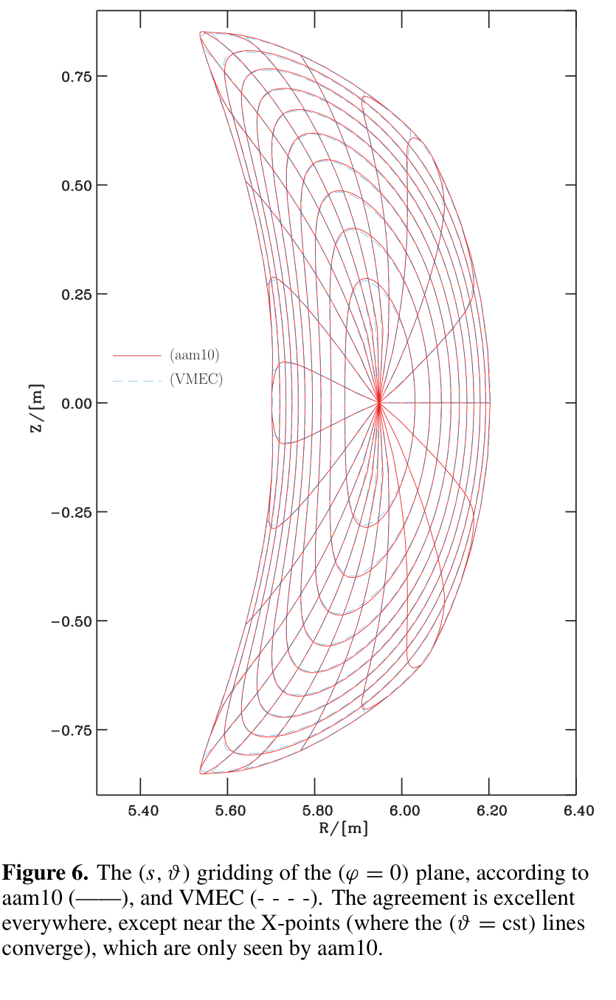
NF_45_22.pdf · PDF 6 / 印刷 27 · 原文图 6 · 原图渲染裁剪，无重绘。
读图： 平面上的 网格，横纵为 ，单位米。红色实线为 aam10，浅蓝虚线为 VMEC；绕磁轴的曲线和从轴延展的曲线分别体现径向标签与角度映射。
观察与结论：大部分核心网格重合，最外层与 X 点附近出现差异；aam10 的角度线在分离面 X 点邻域聚集。该图验证位置映射层面的对照，与图 4、5 构成证据链。但线条重叠无法给出逐点位置误差，也不能判断全部混合度量、单元面通量和矩阵条件数。颜色浅使局部差异不易读时，可点击全分辨率图片。
5.3 真空电流零值是一个苛刻的内部检查
原文强调环向电流 的积分路径包含很大的线圈电流贡献，正负方向约为 ，但真空等离子体域内应得 。aam10 在全体积取得的 “远小于 5 A”。用这个零量检查积分抵消，有助于发现场线追踪或积分误差；不能把“远小于”改写成最大误差恰为 5 A。（§3.2，PDF 5）
若仅作数量级参考，，这是读者计算的残余与单侧大电流之比，不是论文定义的精度，也不是全部几何量的相对误差。结果可能受线圈对称性和共同积分偏差影响，不能推广成“磁坐标具有八位有效数字”。
| 已验证的量 | 证据 | 未提供的验证 |
|---|---|---|
| 磁通径向导数 | 图 4 双分支曲线比较。 | 绝对误差表、阶数扫描、积分网格收敛。 |
| 图 5 多磁面角度分布。 | 完整误差范数、角度重采样规则和零点附近误差界。 | |
| 位置映射 | 图 6 网格叠加。 | 坐标逆映射误差、体积误差、逐点位置偏差。 |
| 真空环向电流 | 正文报告 远小于 5 A。 | 径向误差分布、最大值及独立积分路径验证。 |
| 全部混合度量与 Jacobian | 给出构造关系。 | 逐项独立数值基准；不能由 单项推定全部可靠。 |
6. 岛链与外侧层流 SOL：多块网格的实际展示
§4 使用标准 W7-X 真空场，模块线圈有电流，鞍线圈电流置零。这与 §3 的基准场不同， 小岛共振显著减小。分离面附近旋转变换趋近一，形成 大岛链；岛链外仍有磁面清楚的层流区域，作者借用 tokamak 术语称为 far SOL。某些场线将与偏滤器结构相交，但论文主要展示磁几何，没有求靶板连接长度、开放边界输运或壁面热流。（§4，PDF 5–7）
作者再追踪 400 圈建立核心、五岛和外侧 SOL 磁面，计算旋转变换，再分域重复 Nemov 算法。图 7 展示 axes-line 上的旋转变换；图 8、9 展示豆形与三角形截面的网格；图 10、11 展示相应 分布。岛内与核心使用不同磁通归一化，图 10 特别把岛内值缩小 100 倍，图 11 继承相同设置。（PDF 6–8）
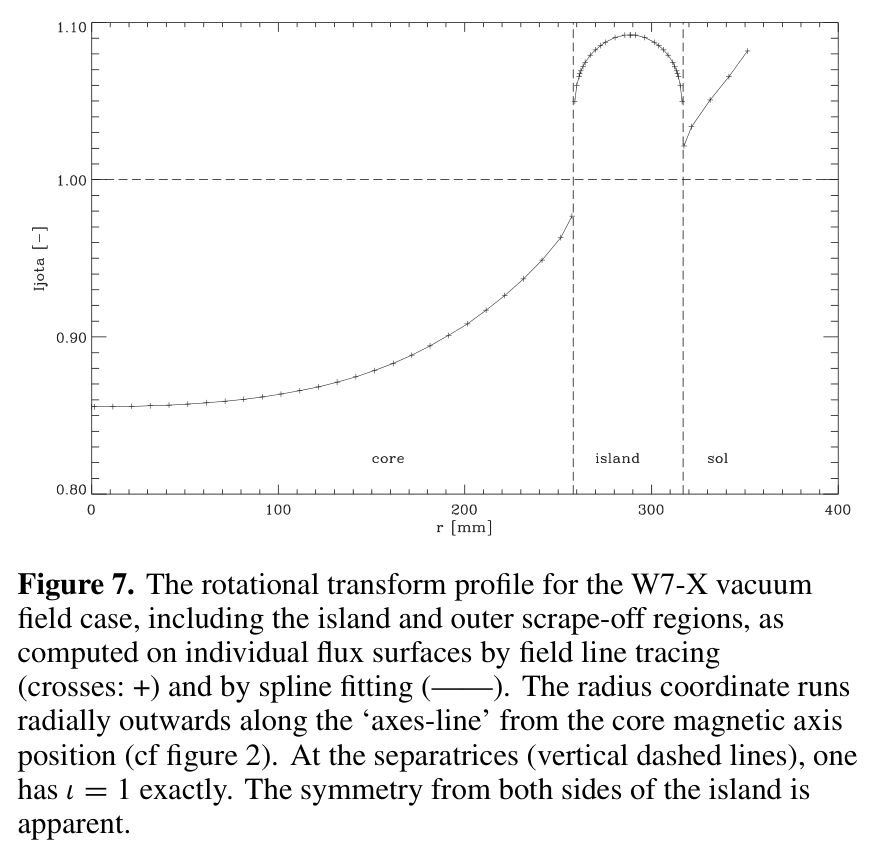
NF_45_22.pdf · PDF 6 / 印刷 27 · 原文图 7 · 原图渲染裁剪，无重绘。
读图：横轴为沿 axes-line 从核心磁轴向外的 ，单位毫米；纵轴 无量纲。叉号为场线计算，实线为样条；竖虚线分隔 core、island、sol，水平虚线为 。这组图采用 §4 的零鞍线圈电流标准场。
观察：核心、岛内和外侧 SOL 各有一段采样曲线，岛两侧呈对称趋势。实际采样在分离面邻域留有空隙，有限端点没有都落在水平虚线上。正文称精确分离面交点为一且连续，但图本身仅显示有限采样，不能据它补出极限数据。岛内曲线采用的绕行轴和角度约定也应在实现中澄清。
支持与限制：该图支持作者能对各规则域估计旋转变换并拟合，不独立证明跨域函数连续，也不是误差收敛或岛内约定与核心约定相同的验证。报告保留图文边界，不把未采样部分连成自行生成的曲线。
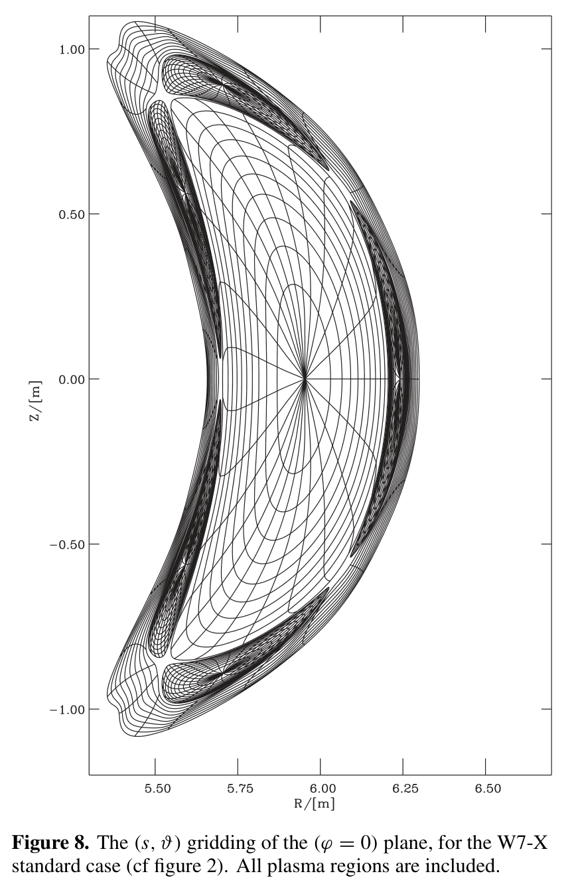
NF_45_22.pdf · PDF 6 / 印刷 27 · 原文图 8 · 原图渲染裁剪，无重绘。
读图： 平面， 均以米计；核心网格从主磁轴展开，五个岛有各自局部网格，岛外还有层流 SOL 网格。黑线连接中心位置，线交点不是有限体积单元的角点。
观察与结论：同一截面能同时展示不同拓扑域，岛与分离面附近网格明显扭曲、聚集，体现图 1 的分块映射在实际场中的效果。它支持多区域几何构造的可行性，不能证明在全部 X 点计算了有限度量，也没有验证跨域插值守恒或开放场线撞壁后的边界条件。
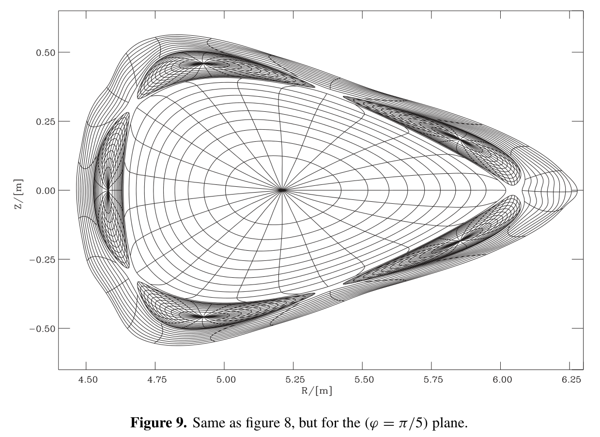
NF_45_22.pdf · PDF 7 / 印刷 28 · 原文图 9 · 原图渲染裁剪，无重绘。
读图：条件继承图 8，改为物理环向角 ；横纵轴是以米计的 。完整图展示三角形核心轮廓、五个岛的截面形态和外侧网格。
观察与结论：同一磁场在另一个对称面具有不同的空间形状，仍保留各域的坐标组织，说明方法并非只生成一张豆形二维网格。图 8、9 是三维构造的两个截面展示；两张图不能替代所有环向位置的检查，也没有单元体积、扭曲率、最差 Jacobian 或环向周期闭合误差。
图 8、9 中画出的线连接单元中心，不是单元边界；线交点是作者计划交给 BoRiS 的中心值位置。这样可以避免把某些会发散的度量直接计算在 X 点上。网格能覆盖分离面两侧的规则域，与在 X 点本身获得良定义角度和有限度量是两回事；论文没有给出域间有限体积通量、插值守恒与输运误差的数值测试。（§4，PDF 7）
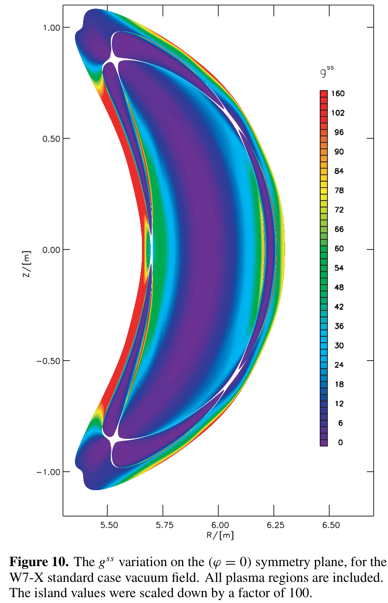
NF_45_22.pdf · PDF 7 / 印刷 28 · 原文图 10 · 原图渲染裁剪，无重绘。
读图：， 为米，色条标 ，没有另列单位。紫色为小值、暖色为大值，快速变化区域沿外层与岛边缘出现。图注明确：岛内数值缩小 100 倍后绘制，岛外与核心没有这一缩放。
观察与结论：磁轴、岛 O 点和 X 点相关位置表现为小值，分离面邻域存在很强空间变化。这与 的标签梯度含义一致。各域 的归一化不同，同色不能用于物理强弱的绝对跨域比较；也不能把白色缝隙解读为经测量的零磁场或真实无输运区。图中没有误差或收敛诊断。
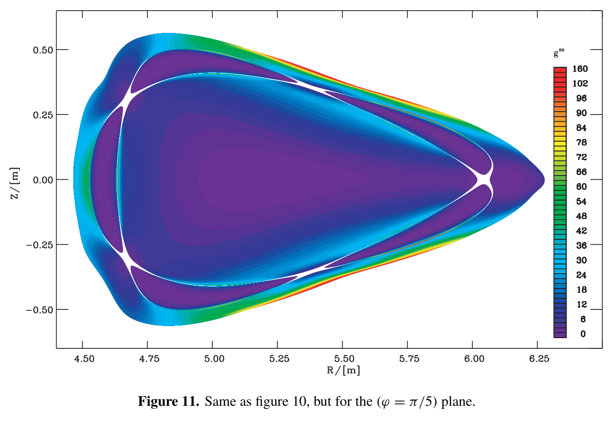
NF_45_22.pdf · PDF 8 / 印刷 29 · 原文图 11 · 原图渲染裁剪，无重绘。
读图：与图 10 相同的度量图，改为 ；条件和岛内除以 100 的缩放继承图 10。 单位米，完整保留色条和分离面附近结构。
观察与结论：较小的径向度量分布在核心轴、岛中心和 X 点附近，外层有陡峭色带；几何分布随物理环向截面改变。它与图 9 网格组织互相对应，支持多截面度量构造。它不证明所有其他度量有限；两种截面颜色也不能在区域归一化尚未统一时直接当物理输运强弱比较，更不能据此给出全域误差百分比。
原文说 在全部 X、O 点趋零并有快速空间变化。这与磁通标签的梯度退化相符，却不与“某些其他度量发散”矛盾：逆变径向分量为零时，角度基矢和相关协变分量可以变得很大。不能把图里的零值或白色缝隙解读为磁场消失、磁空点、数值误差恰为零或热输运被完全阻断。（§4，PDF 7；解释为读者判断）
7. 可信度与核查：几何证据强，完整复现链仍有缺口
7.1 作者的结论和实际证据如何对应
作者结论：方法与 VMEC 结果可比，并可扩大到核心、边缘岛和 SOL；减少派生量导数有助于数值精度。（§5，PDF 7）证据支持：核心区三层几何对照和真空电流抵消测试，以及两种截面的分域网格和径向度量。仍不能确认：任意机器、任意压力、任意磁拓扑下均可靠；比其他算法更快；在所有度量分量上均更准确；与 BoRiS 耦合后具有守恒、稳定的跨域输运。正文没有运行时间、硬件、消融、独立岛区基准或完整收敛研究。
边缘 VMEC 差异反映有限谱表示的局限，但两组方法在 X 点附近均面临难题：VMEC 表达能力有限，场线输运也会放大误差。论文没有量化双方误差源，不能把一个方法当作另一个的绝对真值。有限长度的 Poincaré 轨迹与样条平滑也不能严格证明一个区域完全非遍历。
7.2 读者核查：磁通归一化与 Jacobian 链式法则
这是从原文定义推得的复现疑问，不是作者报告的勘误。原文写 、、、。若 指通常的体积 Jacobian ，链式法则要求：
原文式 (2b) 却写成除以这一因子，式 (2a) 又含磁通的平方。在 、 的总磁通约定下，通常 ，而原式 (2a) 右侧为 ；式 (2b) 最后一个表达式的量纲则是 。因此不能把两式视为同一通常 Jacobian 的无歧义变换。Jacobian 的整体负号可以来自定向，不能解释乘除因子和量纲问题。
此外，角度周期为 时，若 是整个截面的总环向磁通，常见 Clebsch 叉积应配套每弧度磁通或相应的 因子。本文同时采用总磁通定义、式 (3) 的电流角度因子和无额外系数的叉积；复现前需核对 aam10 的真实内部单位。不能只“修正”一个公式，再照抄其他初值。最小核查是在一个已知规则磁面上，同时检查磁通面积积分、角度一圈增量、叉积重构磁场、数值体积元与解析 Jacobian。代码未获得，所以本报告不判定究竟是哪一处印刷或约定导致，也不给出未经验证的替换式。
7.3 读者核查：角度梯度与局部 Clebsch 梯度的区别
原文把式 (6) 的齐次输运量标为 。若存在磁剪切，局部场线标签 的梯度实际上是：
在一个展开角度的局部坐标图内沿场线不变，故 满足恒定标量梯度的齐次输运。对原文所写的 ，在光滑 Cartesian 分量下，链式法则还给出：
当 时源项消失；当以起点 初始化并输运 时，也得到原文形式的齐次系统。这两种协变量相差沿 的项，其与 的叉积相同，所以磁场重构本身不能区分它们。式 (6) 可能输运的是局部 Clebsch 梯度代表，而非式 (4b) 在跨磁面光滑坐标下的完整角度组合。这是约定需要澄清的地方，不能在没有实现的情况下直接认定全部结果错误。完整混合度量与跨周期拼接需与该选择一致。最小验证是用已知非零磁剪切的规则场，比较直接角度差分与齐次输运，并检查加回剪切项后是否一致。（原式定位：PDF 3；推导为报告新增，非原文证明）
7.4 两处图文问题与一个容易误读的缩放
图 5 的单位。原图纵轴标 ，与原式 (9) 的无量纲径向标签梯度平方所要求的 不相符。裁图保留这个原标注；报告把它标为疑点，不擅自改图，也不从该轴推算有物理单位的精确结果。（PDF 6）
图 7 的分离面连续性。正文说两处分离面交点严格 ，且径向函数连续；但图中的实际采样曲线没有连到虚线交点，在边界邻域存在明显未采样区和有限端点差异。它可以与“极限趋一、精确分离面未采样”相容，却不能单独证明该极限或连续性。更需要明确岛内 相对哪个轴和角度定义；局部岛角度绕行与全局主轴绕行的数字不一定同义。报告不把图中的空隙补成作者未显示的数据。（PDF 6–7）
图 10、11 的岛区缩放。岛内各自归一化的 先缩小 100 倍才上色；岛与核心的同色不能用于跨域绝对量比较。甚至不缩放时，不同 标签的度量也不能当作同一物理扩散量；跨域比较应先统一磁通定义或比较坐标无关的物理位移、通量。（PDF 7–8）
7.5 原文明确的限制与本报告提出的缺口
| 类型 | 限制或缺口 | 实际影响 |
|---|---|---|
| 作者明确 | 非轴对称、非遍历；强遍历区域不处理。 | 必须先判定拓扑适用性，不能将平滑后的轮廓当严格磁面。 |
| 作者明确 | 长线积分可指数发散；四路追踪缩短长度。 | 增加周回数不一定持续提高梯度精度。 |
| 作者明确 | X 点有度量奇异；使用中心值避开。 | 需要额外验证跨块输运和邻近奇异点的条件数。 |
| 未报告 | 计算成本、误差范数、自动拓扑阈值、完整参数和公开实现。 | 不能直接比较速度、精度，也不能凭报告完成严格同条件复现。 |
| 读者核查 | 总磁通与角度归一化、Jacobians、剪切下的协变量含义。 | 要先用恒等式测试再计算完整度量。 |
| 验证覆盖不足 | 全部展示为真空场；有限压力只给出一般表达式。 | 有限压力平衡、全部度量和其他机器的泛化尚不能确认。 |
8. 值得借鉴的做法：迁移前先限定任务
下面是通用几何与数值方法建议，没有假定读者正在使用某个特定平衡代码。最值得迁移的是把拓扑、梯度和映射验证分开，而不是逐字照抄仍有约定疑问的公式。
| 借鉴对象与原因 | 前提与迁移步骤 | 成本与可能失败的条件 |
|---|---|---|
| 多区域坐标图：每个磁轴有自己的局部径向标签，避免用单一核心磁轴强行编号岛内磁面。 | 适合规则岛链与层流区。先分拓扑域，记录区域编号和角度约定，再定义各域磁通归一化，建立邻接与边界映射；将单元中心与真正的单元面区分。 | 增加拓扑识别、域接口和存储管理。强遍历、次级岛密集或随时间拓扑改变时，域划分可能失效；仅有连续标签不足以保证通量守恒。 |
| 沿线输运梯度：从原始场的导数取得几何梯度，减少派生几何量的再次差分。 | 需光滑可微的场插值和可验证初值。先在已知坐标的规则场实现径向系统，检查 ，再加入角度协变量，并检验剪切项与周期拼接。 | 每点需场和一阶导数，长轨道可能指数放大误差。场噪声、插值导数不一致、 过小和坐标约定错误都会失败。 |
| 四路重叠检查：利用两个对称起点、正反积分识别漂移，并缩短有效输运长度。 | 需已知相同磁面的两起点及足够对称性。按同一磁坐标重采样，在重叠点计算位置和梯度差异；把一致性公差作为输出元数据。 | 多条短线与重采样有成本，未必比单线更快。不同路径共用错误初值、场导数或磁通归一化时可一起偏离真值。 |
| 真空零电流与几何双重检查：大积分抵消后的零值能发现单看网格看不出的误差。 | 先确认模型中真空电流应为零，选独立积分路径；同时检查磁通积分、叉积重构、Jacobian 与映射，避免把某一零值当作整体精度。 | 需要额外积分和验证算例。有等离子体电流的有限压力场不能沿用零值标准；对称抵消可能掩盖共同偏差。 |
| 拟合后解析求导：减弱磁通积分噪声对初值的污染。 | 适合已分离规则域中的平滑单调磁通分支。比较多个拟合阶数及形状保持样条，保留原始积分值，检查磁通单调性和留出点导数。 | 拟合与参数选择增加成本。跨真实分离面或把次级岛抹平可能改变拓扑；高阶多项式端点振荡会被初值系统放大。 |
9. 可以继续做的研究：先核对约定，再研究性能和物理耦合
作者明确提及而未实现的方向：用 Cary–Hanson residue 自动识别 X/O 点（§2.1，PDF 2）。作者也把结果用于 BoRiS 几何输入，但本篇没有展示输运耦合测试（§4–5，PDF 7）。以下五项是本报告提出的可检验方案，不是论文已经完成的工作，也没有做新颖性穷尽检索。
9.1 最高优先：建立归一化和剪切的一致性基准
原文动机：式 (2) 的 Jacobian 变换、总磁通约定和式 (6) 的协变量含义不够明确。假设：如果主要问题来自局部 Clebsch 梯度与全局角度组合的混用，以及磁通单位约定，那么统一约定、明确加回剪切项后，各种独立几何重构应随分辨率共同收敛。
最小实验与基线：选一个已知坐标映射的光滑非轴对称规则场，分别设置零剪切与非零剪切；以解析或高精度直接求导结果为基线。同时计算磁通面积积分、展开角度增量、齐次输运协变量、加入剪切修正的角度组合，以及位置映射 Jacobian。依原文印刷式、单位统一式分别运行，记录所有因子，避免临时改单位以匹配图像。
指标与判定：比较磁场叉积重构残差、径向垂直残差、度量和体积元相对误差；在零值附近采用绝对误差而不是除以零的相对误差。三档以上加密后，如果校正后的误差随网格和步长收敛、不同路径一致，则支持假设；若非零剪切仍有不消失的误差，否定“仅靠约定校正即可”的解释，继续查输运、插值和接口。不能只用叉积残差判定角度协变量正确，因为径向规范项不改变叉积。
资源与风险：一个小型解析场程序和工作站即可起步；没有 aam10 源码时只能验证论文方程的独立实现，不能代表原作者实现。风险是基准场本身的磁坐标构造循环引用，需保证解析输入独立。
9.2 自动拓扑分类与可用区域置信度
原文动机：X/O 点靠人工检查，强弱遍历分类没有阈值。假设：Poincaré 映射的切线矩阵及 residue，结合有限时间扩散诊断，可以比仅凭交点形状更稳定地识别周期轴和排除不可用磁面。
最小实验与基线：在同一规则岛场逐步施加可控扰动，包含清晰岛链、薄随机层和岛重叠三类样本；以已知拓扑或人工高精度分类为参照，比较原文式交点距离最小化、residue 分类、加扩散诊断的分类。保留周期轨道长度与长短不同的追踪时间。
指标与判定：周期轨道定位误差、X/O 分类一致性、不可用区域的误接纳率、磁面漏检率、阈值随积分长度的稳定性和运行时间。必须在扰动扫描与追踪长度扫描中减少错误接纳，而非只多找到一些岛，才支持假设；若阈值微调导致区域大幅改变，则应输出“不确定区域”而非强行给坐标。
资源与风险：需一阶或二阶场导数、Poincaré 切线积分及多个扰动算例，普通工作站可完成小规模原型。有限时间诊断仍不能严格证明全局可积；粘滞轨道可能被误判为规则。
9.3 把四路追踪升级为可报告的误差控制
原文动机：指数误差放大与四路一致性没有量化。假设：缩短输运段、采用自适应步长并监测重叠残差，可以扩大岛附近的可靠区域，但不会消除拓扑奇异性。
最小实验与基线：在同一核心和岛区磁场，对比单起点单向追踪、原文二阶 RK 四路策略、自适应高阶四路策略；分别扫描步长、磁场网格和轨道长度。用高分辨率独立参考或已知解析映射评估，而不是令最细的同一算法自动成为真值。
指标与判定：固定误差预算下的可覆盖磁面比例、最大梯度误差、四路差异、场函数调用次数、墙钟时间。只有同时降低真实误差并改善成本或覆盖范围，才支持改进；若四路差异降低但独立误差不降，说明一致性诊断掩盖共同偏差，应否定其充分性。资源为一台工作站至小型多核计算；导数噪声和高阶法在不光滑插值处的阶数损失是主要风险。
9.4 跨分离面的有限体积守恒与条件数
原文动机：图 8、9 只展示中心网格，X 点避开以后仍要连接物理域。假设：采用匹配物理通量的多块接口，在中心坐标退化邻域加密或切换局部坐标，可使平行/垂直扩散计算保持守恒和收敛。
最小实验与基线：选带单岛链的非轴对称几何，求解一个有已知源项的制造解扩散问题；对比原文风格的中心网格加朴素插值、守恒接口网格，以及不依赖磁坐标的物理空间参考网格。先不加入复杂等离子体反应和靶板物理，再测试一个代表性平行各向异性情形。
指标与判定：全域源汇平衡、域接口通量跳跃、解误差、最差网格 Jacobian、矩阵条件数与负值出现情况。成功标准为接口误差与全域守恒残差随加密下降且不依赖人为切去越来越宽的 X 点邻域；若只有裁掉困难区域才稳定，则否定“中心值避奇异足以完成跨域输运”的假设。资源需多块有限体积原型，成本高于几何复现；极强各向异性可能放大任何小的接口不一致。
9.5 有限压力与全部度量的验证
原文动机：式 (10)、(11) 宣称可补足一般度量，但图示算例均为真空。假设：在磁面仍规则的有限压力非轴对称场，若径向协变分量与角度规范一致处理，可保持完整度量张量的精度。
最小实验与基线：选一个光滑嵌套磁面的有限压力平衡，逐步增加压力和磁剪切，以该平衡已知坐标的直接几何导数为基线；逐项比较协变、逆变度量、Jacobian 与 。拓扑开始破坏后停止“规则磁坐标有效”的测试，另行记录失败区域。
指标与判定：张量逆关系 、体积积分、混合分量误差及各压力档的收敛。全套几何恒等式与独立参考都收敛才支持泛化；若只有 一项通过，则否定完整度量已验证。资源需已有有限压力场和平衡代码，较适合有计算平衡基础的研究组；参考坐标转换和压力导致的岛结构是混杂风险。
10. 复现路线、证据定位与覆盖说明
10.1 最小复现顺序
- 统一总磁通/每弧度磁通、角度周期、Jacobian 定义、坐标手性、区域编号和岛内旋转变换；先完成第 9.1 节恒等式测试。
- 在光滑规则非轴对称基准场中建立场插值及其一致的一阶导数，定位磁轴并构造 Poincaré 截面。
- 对 axes-line 两侧分支积分磁通、电流，拟合磁通并作导数与单调性检查；建立磁面到位置和角度的映射。
- 先实现径向梯度输运，再明确角度协变量的局部规范，加入四路重叠检查；避开初值分母为零的点。
- 在与论文 §3 相应的真空线圈条件下复现图 4–6 的物理量，进行分辨率和步长扫描，而非只复刻图形外观。
- 再切换到 §4 的零鞍线圈电流场，构造岛与 SOL 分域网格，独立报告每域磁通归一化与真实未缩放度量。
- 最后才做全部度量、跨块守恒与实际输运耦合；每一步保存覆盖失败的区域和原因。
正文已知参数：400 圈追踪；二阶 RK；三次样条；磁通两侧分别高阶多项式拟合；VMEC 500 径向点、20 极向和 15 环向谐波。缺失：磁场数据、模块线圈绝对电流与完整几何、场网格间距、积分步长/容差、径向采样间距、拟合阶数、弱遍历判据、角度重采样与域接口算法、实际运行成本。因此可以独立复现方法，但目前材料不足以声称已完成同参数数值复现。（§2–4，PDF 2–7）
10.2 主要证据索引
| 问题或结论 | 原文定位 | 报告判断 |
|---|---|---|
| 非遍历、非轴对称适用范围；多区域映射 | §1–2.1，PDF 1–2 / 印刷 22–23；图 1–2 | 明确限制，不能写成任意 SOL。 |
| 初值、ODE 与四路追踪 | §2.2，PDF 3–4 / 印刷 24–25；式 (4)–(7) | 已重构；角度协变量与剪切需确认。 |
| 磁通和 Jacobian | §2.1，PDF 3 / 印刷 24；式 (1)–(3) | 保留原式；归一化链式法则存在疑点。 |
| 核心对照及真空电流检查 | §3，PDF 4–6 / 印刷 25–27；图 3–6 | 支持核心几何一致，未给全套误差。 |
| 规则岛与 SOL 网格；岛区缩放 | §4，PDF 6–8 / 印刷 27–29；图 7–11 | 空间展示完整，未做输运验证。 |
| 推广与 NCSX | §5，PDF 7 / 印刷 28 | 作者称有应用，正文未展示证据。 |
10.3 来源材料与未获取项
主来源：用户提供的 NF_45_22.pdf，正式期刊排版共 8 页，文件 SHA-256 为 8859c38c4a2f508b3390eeeabeca5428c34476e1061faf34d439652d98a8d52c。图片全部来自该版本，按页渲染后裁剪，保留原坐标轴、图例、色条、面板和既有公式。没有使用图片对象数判断图数：多数插图为矢量图。报告不附整篇 PDF。
外部来源核对：DOI 链接见报告开头。访问日期 2026-10-10；该 DOI 的在线页面在本次工具访问中未成功读取，全文判断以上传 PDF 为准。IPP 官方出版记录中可检索到该标题；检索也出现 2003 年 EPS 同主题早期会议稿，它不是本篇的补充材料，本报告未将其图号和结果混入。检索未确认额外补充 PDF、aam10 公开代码或原始数据，不能据此断言它们不存在。
引用关系：原文 [1] Nemov 1988 是梯度输运基础；[3] Boozer 1982 是磁坐标建立；[10] BoRiS 2001 说明应用背景；[11] VMEC 1986 是核心基准代码来源；[13] Cary–Hanson 1986 是未实现的自动拓扑分类建议；[14]、[15] 分别为 Jacobian 和度量关系背景。本次检查了参考文献表，没有逐篇追读这些工作，不把引用本身当作对印刷公式的独立验证。
10.4 成品覆盖核对
全部已获取材料阅读完成：主 PDF 8 页均通读并查看页面，11 幅编号图均已裁剪、嵌入、逐图解释；图 4 的四个面板分别解读；其他图的示意组成、比较线型与截面分别说明。未发现额外实质性未编号图、表格或附录。覆盖清单见 figure-manifest.json 与 material-manifest.json。“覆盖完成”只指上传版本和报告内容，不代表算法疑点已解决或数值复现完成。
公式采用 LaTeX 编写，在生成时预渲染为 HTML 与 MathML，逐式保留 TeX 源码，字体和 CSS 随报告打包；无需远程脚本或 CDN。关键正文无须 JavaScript，图片与公式可离线阅读。实际检查使用本机 Google Chrome 离线渲染，覆盖桌面、390 像素窄屏和打印布局，禁用页面脚本并阻止远程请求；应用内浏览器因工作区符号链接限制未能初始化。图 5 单位疑点、图 7 未采样边界、归一化和剪切问题均保留为真实限制。